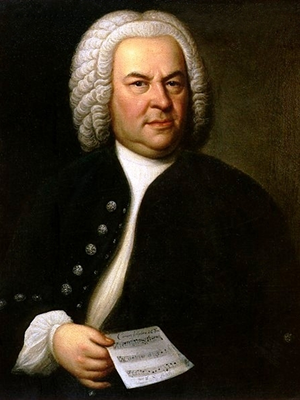
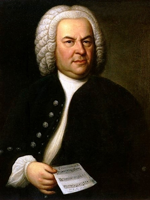
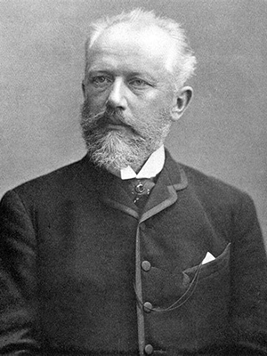
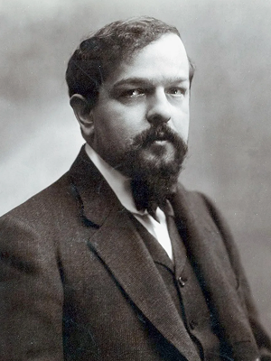
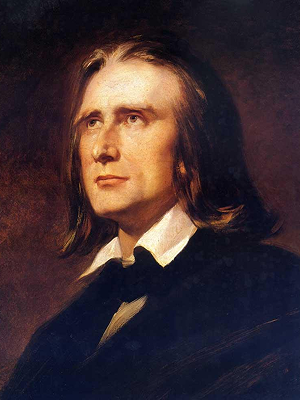
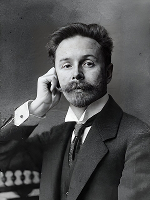

-
 
 -
Иоганн Себастьян Бах
1685 — 1750
немецкий композитор и органист
-

-
Пётр Ильич Чайковский
1840 — 1893
русский композитор, педагог, дирижёр
-

-
Клод Дебюсси
1862 — 1918
французский композитор
-

-
Ференц Лист
1811 — 1886
венгро-немецкий композитор, пианист-виртуоз
-

-
Александр Николаевич Скрябин
1872 — 1915
русский композитор и пианист
-

-
Николай Андреевич Римский-Корсаков
1844 — 1908
русский композитор, педагог, дирижёр
Шаги: 0